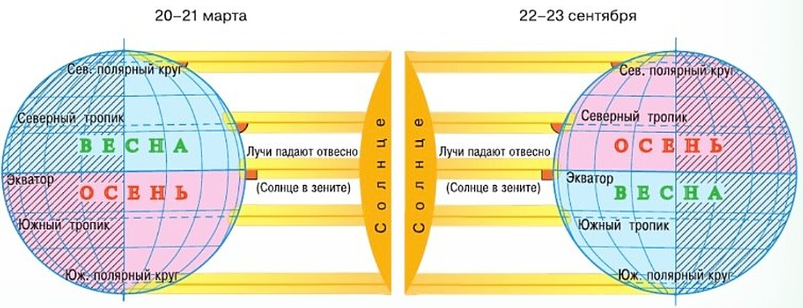
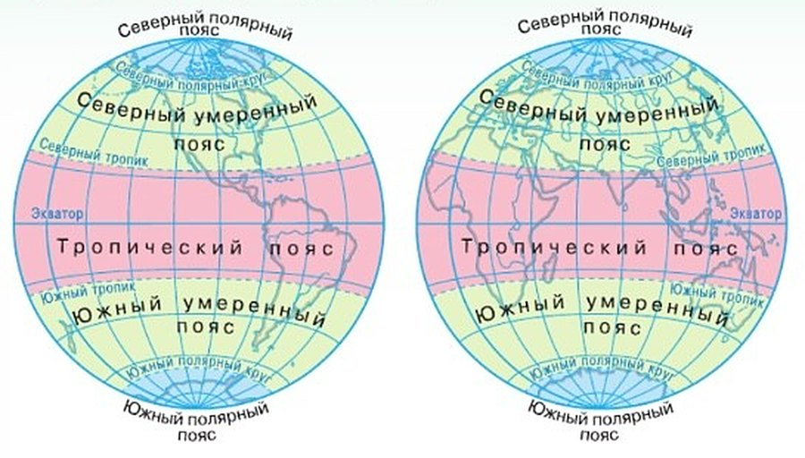
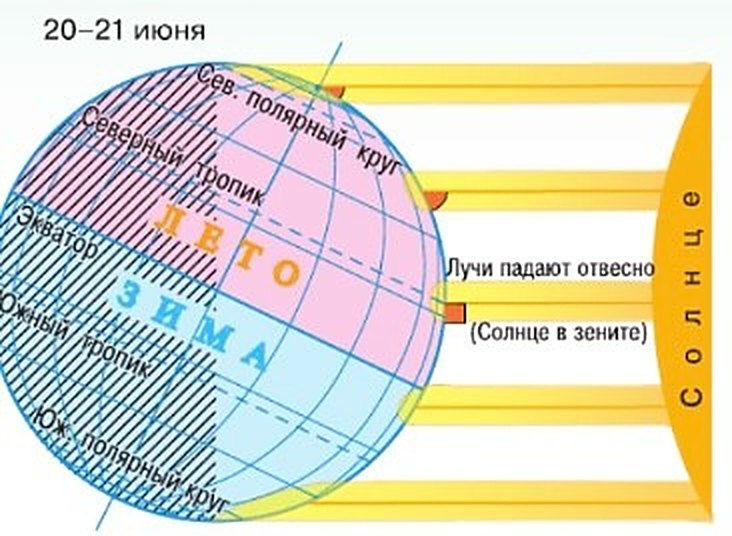
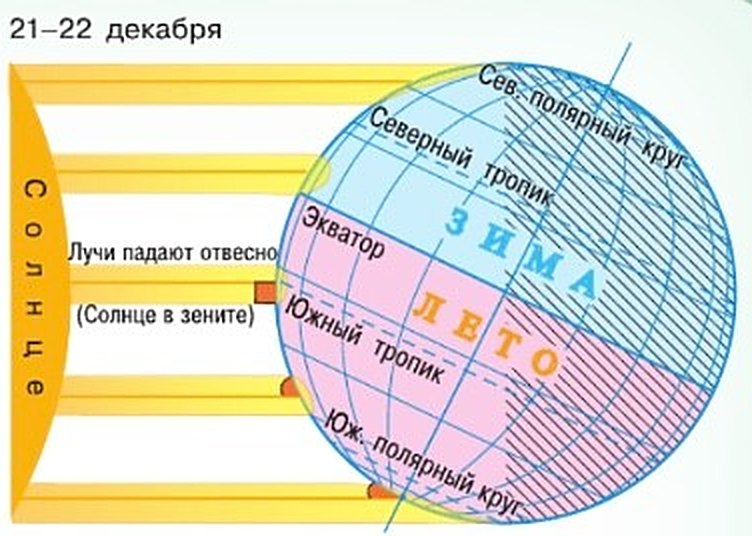

Как распределяются свет и тепло по поверхности Земли?
В один и тот же момент разные участки Земли получают разное количество света и тепла.
Земная ось наклонена (§ 10). Поэтому в течение года то Северное, то Южное полушарие освещено Солнцем больше.
Посмотри на рисунок 27. Между тропиками лучи как бы упираются в Землю: Солнце там стоит высоко. А у полюсов лучи словно скользят по поверхности — Солнце низко, угол падения лучей намного меньше.
Почему у экватора жарко? Потому что Земля — шар. Участок у экватора получает больше света и тепла, чем такой же участок у полюсов (схема «Отвесно и наискосок»). Была бы Земля плоской — лучи грели бы её везде одинаково.
Зенит. Самое высокое положение Солнца над горизонтом — зенит. Тогда лучи падают отвесно. Так бывает в полдень и только в полосе между Северным и Южным тропиками. Места, где Солнце в зените всегда, на Земле нет.
Пять поясов. Тропики и полярные круги делят Землю на пять поясов освещённости (рис. 28). Пояса различаются тем, сколько длится день и сколько тепла приходит от Солнца.
В один и тот же момент времени разные участки поверхности Земли получают разное количество тепла и света. Северное и Южное полушария Земли в течение года освещаются неодинаково из-за наклона земной оси. В течение года то одно, то другое полушарие освещено Солнцем больше.
Посмотрите на рисунок 27. Вы видите, что солнечные лучи как бы упираются в область между тропиками. У полюсов, в полярных областях, лучи словно скользят по поверхности Земли. Угол падения солнечных лучей здесь намного меньше. В районе экватора Солнце стоит высоко над горизонтом, в полярных областях — низко.
Из-за того что Земля имеет шарообразную форму, участок поверхности у экватора получит больше солнечного света и тепла, чем такой же по площади участок поверхности в полярных областях. Именно поэтому у экватора жарко, а у полюсов холодно. Если бы поверхность Земли была плоская, солнечные лучи распределялись бы равномерно, одинаково нагревая её.
Самое высокое положение Солнца над горизонтом — зенит. Когда Солнце в зените, его лучи падают на Землю отвесно. Это происходит в полдень, в определённых местах, в полосе между Северным и Южным тропиками. На Земле нет такого места, где Солнце в зените находилось бы постоянно.
Тропики и полярные круги разделяют поверхность Земли на пояса, различающиеся продолжительностью солнечного освещения и количеством тепла, получаемого от Солнца. В зависимости от угла падения солнечных лучей, продолжительности светового дня выделяют пять поясов освещённости (рис. 28).


Смена дня и ночи — следствие осевого движения Земли.
Смена сезонов года — следствие: 1) орбитального движения Земли; 2) неизменного наклона земной оси к плоскости орбиты; 3) неизменного положения оси вращающейся Земли в пространстве.
Тропики — условные линии, ограничивающие ту область по обе стороны от экватора, в пределах которой Солнце бывает в зените.
Полярные круги — условные линии, ограничивающие ту область вокруг полюсов, где бывают полярный день и полярная ночь.
Количество света и тепла, поступающее на единицу площади поверхности Земли, уменьшается от экватора к полюсам.
1. Солнце светит на всю Землю. Почему же у экватора жарко, а у полюсов холодно?
2. Бывает ли Солнце в зените в Москве? А в Турции?
3. В § 10 мы нашли тропики и полярные круги на рисунке 26. Что о них стало известно теперь?
Что происходит на Земле в дни солнцестояния и равноденствия?
20 (21) июня — день летнего солнцестояния. В Северном полушарии самый длинный день и самая короткая ночь в году. Северное полушарие получает больше света и тепла, чем Южное.
Солнце в зените над Северным тропиком (рис. 29). Всё от Северного полюса до Северного полярного круга на свету: Солнце не заходит, длится полярный день. А в Южном полушарии наоборот: вокруг Южного полюса до полярного круга всё в тени — полярная ночь.
Сколько длится полярный день? На полюсах — около полугода. Чем ближе к полярному кругу, тем он короче. На самих полярных кругах, по учебнику, — чуть меньше двух суток. А за полярным кругом, ближе к экватору, день и ночь сменяются каждые сутки.
22 (23) сентября — осеннее равноденствие. Лето позади: день всё короче, ночь длиннее, и вот день равен ночи везде, кроме полюсов. Там Солнце весь день видно на горизонте. Оба полушария получают поровну света и тепла (рис. 27).
21 (22) декабря — день зимнего солнцестояния. У нас самая длинная ночь и самый короткий день в году. Теперь к Солнцу больше повёрнуто Южное полушарие — там лето (рис. 30).
20 (21) марта — весеннее равноденствие. После зимнего солнцестояния у нас день прибавляется, а в Южном полушарии убывает. И вот снова день равен ночи (кроме полюсов). У нас весна, а в Южном полушарии — осень. Ещё три месяца — и 20 (21) июня Земля завершит свой годовой виток.
Продолжительность светового дня — это время от восхода до заката Солнца. В Москве он длится от 7 часов в декабре до 17,5 часа в июне.
20 (21) июня в Северном полушарии самый длинный день и самая короткая ночь в году. Это — день летнего солнцестояния. Летом Северное полушарие получает больше солнечного света и тепла, чем Южное. Обратите внимание на рисунок 29. Солнце в зените над Северным тропиком, поверхность Земли между Северным полюсом и Северным полярным кругом вообще не попадает в тень. Там Солнце не заходит за горизонт и несколько дней или месяцев длится полярный день. В Южном полушарии всё наоборот. В затенённой части остаётся весь участок между Южным полюсом и Южным полярным кругом, и несколько дней или месяцев длится полярная ночь.
На Северном и Южном полюсах полярный день и полярная ночь будут длиться примерно по полгода. Чем дальше мы удаляемся от полюсов к полярным кругам, тем короче становятся полярный день и полярная ночь. На Северном и Южном полярных кругах продолжительность каждого из них чуть меньше двух суток. А как только пересечём полярный круг, смена дня и ночи будет происходить каждые сутки.
После летнего солнцестояния в Северном полушарии ещё лето, но день становится всё короче, а ночь длиннее. Через три месяца, 22 (23) сентября, наступает осеннее равноденствие — день становится равен ночи везде, кроме полюсов, где Солнце в течение суток видно на горизонте. В этот день Северное и Южное полушария получают одинаковое количество света и тепла (см. рис. 27).
21 (22) декабря в Северном полушарии наступает день зимнего солнцестояния. Наступают самая длинная ночь и самый короткий день в году. Теперь Южное полушарие больше повёрнуто к Солнцу (рис. 30), там лето.
После зимнего солнцестояния в Южном полушарии день станет убывать, а в Северном прибавляться. Через три месяца, 20 (21) марта следующего года, наступит день весеннего равноденствия в Северном полушарии (и осеннего в Южном). В обоих полушариях (кроме полюсов) день станет равен ночи. Земля будет продолжать двигаться по орбите и завершит свой годовой виток 20 (21) июня.
На полях учебника: «Продолжительность светового дня — промежуток времени от восхода до заката Солнца».


Продолжительность светового дня — промежуток времени от восхода до заката Солнца.
В дни солнцестояния день и ночь бывают самыми короткими или самыми длинными. В дни равноденствия день равен ночи везде, кроме полюсов.
20 (21) июня и 21 (22) декабря · самый длинный или самый короткий день · Солнце в зените над тропиком
20 (21) марта и 22 (23) сентября · день равен ночи везде, кроме полюсов · Солнце в зените над экватором
Два солнцестояния и два равноденствия делят год на четыре части по три месяца.
4. На полюсах полярный день длится около полугода, а у полярного круга — совсем недолго. Почему?
5. Когда в Москве самый короткий день, что происходит в Антарктиде?
6. В какие дни Северное и Южное полушария получают поровну света и тепла? Как это видно на рисунке?
Итоги параграфа
- Сформулируйте географические следствия вращения Земли: а) вокруг своей оси; б) вокруг Солнца.
- Почему Солнце в течение года по-разному освещает Землю?
- Как вы думаете, на экваторе день всегда равен ночи? А на полюсах такое бывает?
- Где на Земле день всегда равен ночи, а Солнце дважды в году бывает в зените?
- Выберите верный ответ. Самое высокое положение Солнца над горизонтом называется: а) зенитом; б) экватором; в) тропиком.
- Закончите предложение: «Угол падения солнечных лучей и высота Солнца над горизонтом уменьшаются, если…»
- Какое утверждение является верным?
1) Смена дня и ночи — следствие наклона земной оси к плоскости орбиты.
2) На полярных кругах Солнце находится за горизонтом в течение полугода.
3) В момент летнего солнцестояния Северного полушария лучи Солнца в полдень падают отвесно на Северный тропик.
4) Только два раза в году Северный и Южный полюсы Земли освещаются Солнцем одинаково.
- Прочитайте внимательно текст параграфа. Выпишите из текста: а) новые термины и понятия; б) незнакомые слова. Расскажите, как распределялось бы тепло на поверхности Земли: а) если бы она была плоская; б) если бы наклон земной оси был равен 90°.
- Объясните поговорку «Солнце — на лето, зима — на мороз». К какому месяцу года она относится?
Обобщение по теме «Планета Земля»
Это итог всего раздела «Планета Земля» — параграфов 8—11.
Земля — часть Солнечной системы. Всё, что происходит на Солнце и на Земле, связано между собой и подчиняется сложным космическим законам.
Земля — шар. Она вращается вокруг своей оси и одновременно обращается вокруг Солнца.
От вращения вокруг оси зависят: а) форма Земли; б) смена дня и ночи.
Земля летит по орбите, а наклон её оси не меняется. Поэтому в течение года Солнце освещает её неравномерно — сменяются времена года.
Планета Земля — часть Солнечной системы. Всё, что происходит на Солнце и на Земле, взаимосвязано и подчиняется сложным космическим законам. Земля имеет шарообразную форму. Она вращается вокруг себя и одновременно обращается вокруг Солнца. Вращение Земли вокруг своей оси определяет: а) форму Земли; б) смену дня и ночи. В результате орбитального движения и неизменного наклона земной оси к плоскости орбиты Земли наша планета в течение года освещается Солнцем неравномерно, происходит смена времён года.
форма Земли (сплюснута у полюсов) · смена дня и ночи · сутки
неравномерное освещение · пояса освещённости · смена времён года · год
Весь раздел — в двух столбиках.
- Подготовьте рассказ на тему «Влияние смены времён года на жизнь человека» и проиллюстрируйте его.
- Вместе с родителями подберите стихи, фрагменты из художественной и научно-популярной литературы о Солнце и Земле как небесных телах. Какое произведение вам особенно понравилось?
Не забудьте отметить свои достижения! В тетради, в таблице «Я знаю», «Я могу», «Мне интересно», отметь, что ты узнала в разделе «Планета Земля».
7. На полях § 11 названы три причины смены времён года, а в «Обобщении» — две. Чего не хватает в «Обобщении»?
8. Что в разделе зависит от того, что Земля — шар?
Проверь себя
Нажимай по очереди. Подсказка — схема «Сколько длится день в Москве».
Солнце бывает в зените
Только между тропиками.
Экватор
Экватор — посередине тропического пояса.
Москва
Между Северным тропиком и Северным полярным кругом.
Турция и Кипр
Южнее Москвы, но севернее Северного тропика — Солнце там в зените не бывает.
Нет ни зенита, ни полярного дня
Этим умеренные пояса и отличаются.
Полярный день и полярная ночь
Между полярным кругом и полюсом.
Северный полюс
Середина Северного полярного пояса.
Антарктида
Южный полярный пояс.
20 (21) июня
Летнее: самый длинный день.
21 (22) декабря
Зимнее: самый короткий день.
20 (21) марта
Весеннее.
22 (23) сентября
Осеннее.
День равен ночи везде, кроме полюсов
Так и переводится: день равен ночи.
Солнце в зените над тропиком
В июне — над Северным, в декабре — над Южным.
Солнце в зените над экватором
Рис. 27: лучи падают отвесно на экватор.
Оба полушария освещены поровну
Граница света и тени проходит через оба полюса.
1. Как называется самое высокое положение Солнца над горизонтом?
2. Где на Земле Солнце бывает в зените?
3. Сколько поясов освещённости на Земле?
4. Когда в Северном полушарии самый длинный день?
5. Почему у экватора жарче, чем у полюсов?
6. В январе Земля ближе всего к Солнцу. Почему же у нас зима?
Расскажи вслух
Почему у экватора жарко, а у полюсов холодно
- Земля — шар, поэтому лучи падают на разные участки под разным углом.
- У экватора Солнце высоко, лучи почти отвесные; у полюсов лучи скользят.
- Количество света и тепла уменьшается от экватора к полюсам.
Тропики, полярные круги и пять поясов
- Тропики ограничивают полосу, где Солнце бывает в зените.
- Полярные круги ограничивают области, где бывают полярный день и полярная ночь.
- Пять поясов освещённости: тропический, два умеренных, два полярных; Москва — в Северном умеренном.
Солнцестояния
- 20 (21) июня — летнее: самый длинный день, Солнце в зените над Северным тропиком.
- За Северным полярным кругом — полярный день, за Южным — полярная ночь.
- 21 (22) декабря — зимнее: всё наоборот, в Южном полушарии лето.
Равноденствия
- 22 (23) сентября — осеннее, 20 (21) марта — весеннее.
- День равен ночи везде, кроме полюсов; Солнце в зените над экватором.
- Оба полушария получают одинаково света и тепла.
Планета Земля (обобщение раздела)
- Земля — часть Солнечной системы, имеет форму шара.
- Вращение вокруг оси — форма Земли и смена дня и ночи.
- Движение вокруг Солнца и неизменный наклон оси — неравномерное освещение и смена времён года.